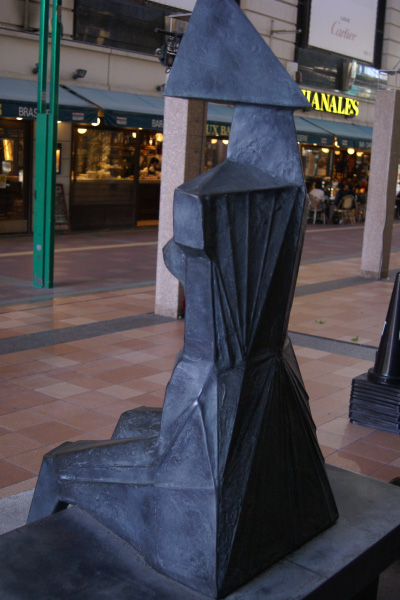
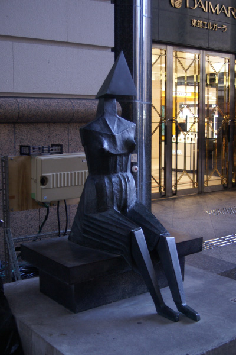
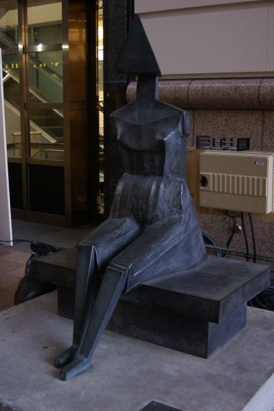
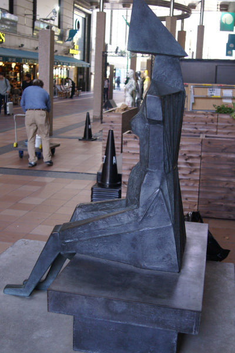
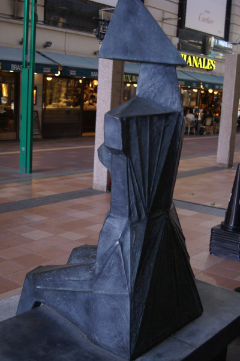
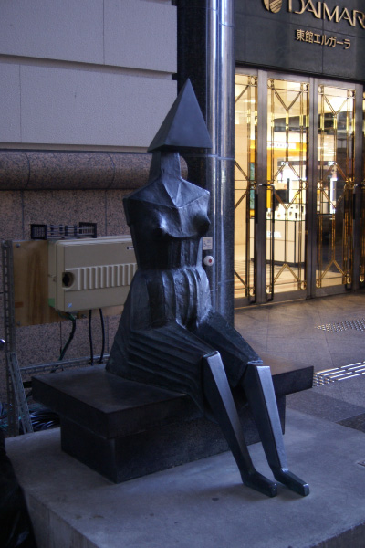
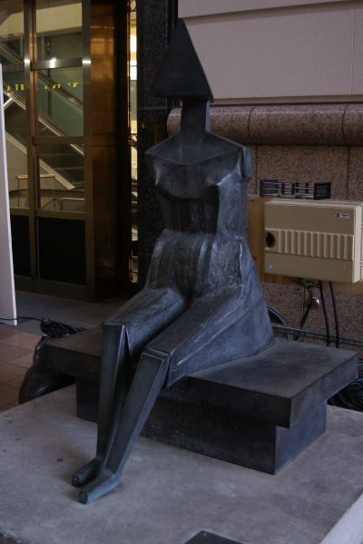
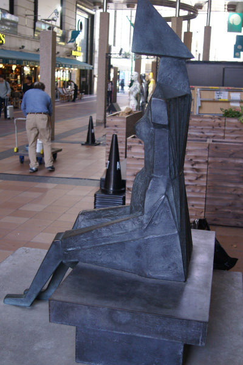
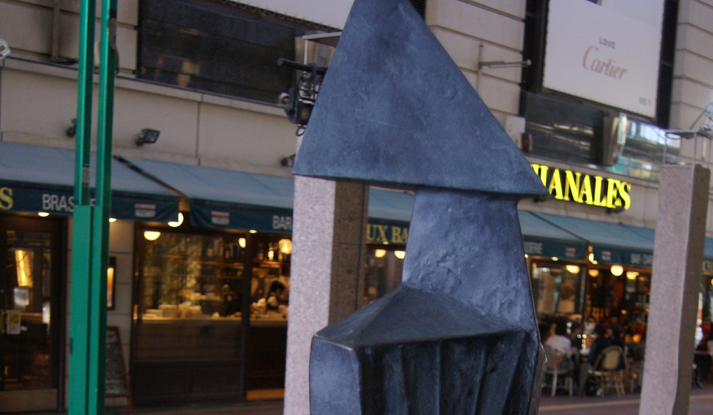
リン・チャドウィック
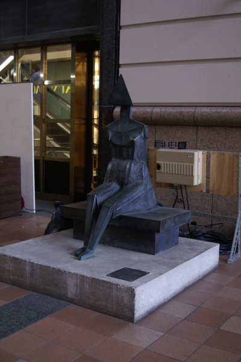
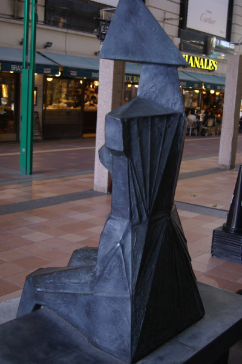
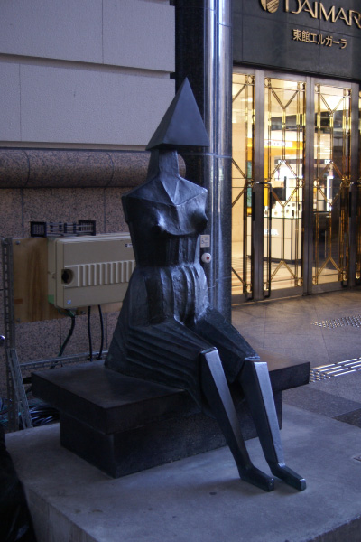
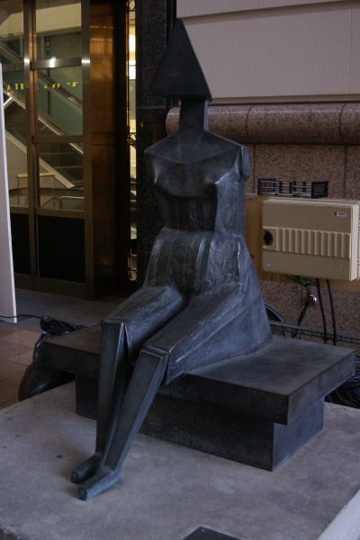
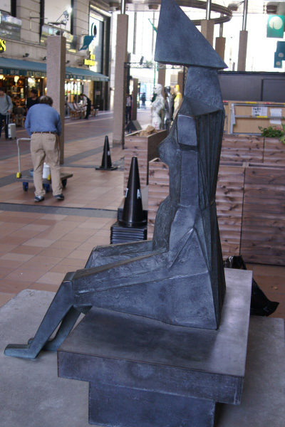
イギリスに生まれ、建築製図家として働き、第２次世界大戦中は海軍の飛行士として従軍。
戦後、テキスタイルの制作、家具や建築のデザインに携わりながら彫刻を学んだ。人間を
モチーフとして鋭角的な面取りを行なう表現を展開し、戦後、ヘンリー・ムーアを代表と
するイギリス彫刻が国際的に高い評価を受けるなか、ムーアに続く世代の作家として注目
を集めた。チャドウィックの作風は、溶接の技法から生まれ、人体の頭部を立方体へと記
号化し、さらに単純な面へ集約しながら様々な人間像を生みだしている。